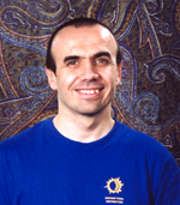

"...whether young, old or too old, sick or lean, one who discards laziness, gets success if he practices Yoga."
--- Hatha Yoga Pradipika,
translation by Muktibodhananda Saraswati
Hello! My name is Sasha. I was the person to Pioneer the Hot Yoga Movement in Canada, by introducing Bikram Yoga to
Toronto, Canada in 1992.
I have owned and operated Canada's oldest Hot Yoga studio for over 25 years, accumulating over 30,000 hours of daily teaching
and over 18,000 hours of daily personal practice.
I teach and practice the Bikram Yoga Method, and Sasha's Basic Hot Yoga Method.
Based on the same 26+2 yoga exercises as Bikram Yoga, and like the Bikram Yoga series, Sasha's Basic is also a whole body yoga workout, at a slighly
more Intermediate Level, developing and maintaining internal physical fitness and health.
Faithful and correct practice
keeps the body young and healthy all life long, free of old age symptoms and conditions.
These yoga methods will bring sure and definite results to those who practice in a steady, regular and long-term fashion.

I also offer silent morning yoga classes online from Winnipeg, Manitoba.
Namaste!